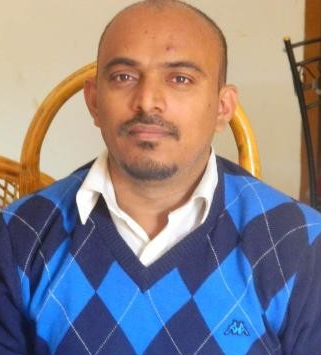

Raj's Resume
My Resume - Rajashekar S (Raj)

Summary
Specialist in all types of User Communications, including both Textual and
Visual Content.
Education
-
B.Sc in PCM from Bengaluru University, SJRC College, Karnataka, India.
Work Experience
- Around 20 years of experience in Technical Publications.
- Around 15 years of experience in Animation & Rendering.
-
Fair knowledge on Instructional Designing with few projects developed.
- Around 25 years of experence in Graphic Designing.
- Beginner in AR/VR Communications
Awards, Certifications, or other Achievements
- Full-stack Web Developer Traiing (persuing)
Hobbies,
Contact